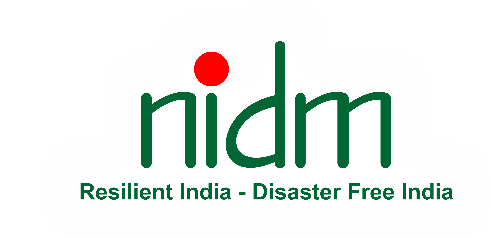

Government Resources
The Government Resources section of HOLO-MAG website serves as a comprehensive repository of vital information and support services provided by government agencies at local, state, and national levels. Here, users can access a wide range of resources, including emergency response plans, evacuation procedures, and disaster preparedness guidelines tailored to specific regions and hazards. Additionally, the section offers access to real-time updates on weather forecasts, alerts, and warnings issued by meteorological agencies to help communities stay informed and prepared for potential disasters. Through collaboration with government partners, our platform aims to empower individuals, communities, and organizations with the knowledge and tools needed to effectively mitigate risks, respond to emergencies, and recover from disasters, ultimately fostering resilience and safety for all.
Here are some of the government resources that can help you prepare and get educated and informed towards disasters:
@image-NDMA-LOGO

